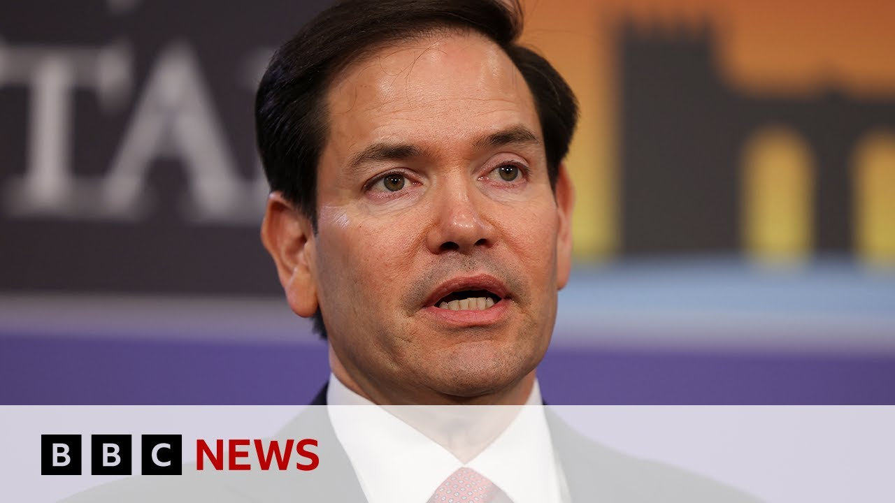

【美国国务卿马可·卢比奥接受外交政策质询 | BBC新闻】
Summary: US Secretary of State Marco Rubio faced questioning by the Senate Foreign Relations Committee, addressing Syria, Iran, China, Ukraine, and Russia, while defending the administration's stance on sanctions and ceasefire efforts in Ukraine, and discussing pressure on Israel regarding Gaza aid and Palestinian relocation.
摘要： 美国国务卿马可·卢比奥接受参议院外交关系委员会质询，讨论了叙利亚、伊朗、中国、乌克兰和俄罗斯问题，同时为政府在乌克兰制裁和停火努力上的立场辩护，并谈及对以色列施加压力以解决加沙援助和巴勒斯坦人迁移问题。

⏱️ Estimated Reading Time: 7 min
To the US now where America's top diplomat Marco Rubio has been questioned by the Senate Foreign Relations Committee, his first appearance since becoming Secretary of State.
现在转向美国，美国最高外交官马可·卢比奥接受了参议院外交关系委员会的质询，这是他担任国务卿以来的首次亮相。
During the hearing, Mr. Rubio discussed the possibility of Syria falling into civil war, the difficulty of reaching agreement with Iran over their nuclear program, and the threat from China and also Ukraine and Russia.
在听证会上，卢比奥讨论了叙利亚可能陷入内战的问题，与伊朗就其核计划达成协议的困难，以及来自中国、乌克兰和俄罗斯的威胁。
One senator suggested to Mr. Rubio that President Putin is quote playing Donald Trump like a fiddle.
一位参议员向卢比奥提出，普京总统“像摆弄小提琴一样摆弄唐纳德·特朗普”。
Here's the Secretary of State's response.
以下是国务卿的回应。
Because the truth of the matter is when Vladimir Putin woke up this morning, he had the same set of sanctions on him that he's always had since the beginning of this conflict.
因为事实是，弗拉基米尔·普京今早醒来时，他身上仍然带着自冲突开始以来一直存在的制裁。
And Ukraine was still getting armaments and shipments from us and from our allies.
乌克兰仍在从我们和我们的盟友那里获得武器和物资。
And the European Union is about to impose additional sanctions.
欧盟即将实施更多制裁。
And the US is looking for no patriot batteries to be able to transfer from other NATO n from NATO nations into Ukrainian hands.
美国正在寻求将爱国者导弹从其他北约国家转移到乌克兰手中。
And what the president is trying to do is end a war.
总统试图做的是结束一场战争。
He's trying to end a bloody costly war that neither side can win.
他试图结束一场双方都无法赢得的血腥而代价高昂的战争。
And people are dying every single day.
每天都有人在死去。
Let's speak to our State Department correspondent Tom Baitman.
让我们听听国务院记者汤姆·贝特曼的看法。
So Tom, uh, on the subject of Ukraine, what do you think we learned there?
汤姆，关于乌克兰问题，你认为我们从中了解到了什么？
Well, it was a consistent theme among Democrat senators and you heard what you heard there was a response, Marco Rubio's response to Gene Shaheen, the leading Democrat on the committee.
这是民主党参议员们的一致主题，你听到的是卢比奥对委员会中主要民主党人吉恩·沙欣的回应。
Um and what was put to him was the um argument that as you heard uh Vladimir Putin had played President Trump like a fiddle.
向他提出的论点是，正如你所听到的，弗拉基米尔·普京像摆弄小提琴一样摆弄特朗普总统。
She wasn't the only senator to use that expression.
她不是唯一使用这种说法的参议员。
Um his argument was very much about sanctions that all of those sanctions that had existed under the Biden administration continued um to be imposed on President Putin.
他的论点主要是关于制裁，拜登政府时期的所有制裁仍在继续对普京总统实施。
that he was waking up every morning still with those constraints around him and that that gave the US leverage.
他每天早上醒来时仍然受到这些限制，这给了美国筹码。
But we heard really senator after senator among the Democrats really push back at that argument and suggest that because the administration had not meaningfully and publicly called for concessions from Moscow that that had effectively weakened uh the Americans leverage in this entire process.
但我们听到民主党参议员们一个接一个地反驳这一论点，并指出由于政府没有实质性地公开要求莫斯科让步，这实际上削弱了美国在整个过程中的筹码。
And that went alongside quite a lot of accusations that the Ukrainians had sort of been hung out to dry on several occasions, particularly on the issue of weapons support.
同时还有许多指责称乌克兰人在多次事件中被抛弃，特别是在武器支持问题上。
Remember that pause uh that the Americans imposed uh on weapons and intelligence sharing earlier in the year.
记得今年早些时候美国暂停了武器和情报共享。
Again, Mr. Rubio um pushed back on that and suggested that they basically needed to have the leverage with both sides in order to get the outcome that President Trump wants, which is a a ceasefire.
卢比奥再次反驳了这一点，并建议他们基本上需要与双方都有筹码，才能实现特朗普总统想要的结果，即停火。
And just taking us back to the Middle East for a moment, Tom, also some interesting insight on to into US communications with Israel.
汤姆，再回到中东问题，还有一些关于美国与以色列沟通的有趣见解。
Yeah, we got a confirmation basically from Marco Rubio that the Trump administration has been applying some pressure on its Israeli ally over the last few days to lift um part of that aid blockade.
是的，我们从卢比奥那里得到确认，特朗普政府过去几天一直在向其以色列盟友施压，要求解除部分援助封锁。
Uh Mr. Rubio saying that he was pleased that some aid had now finally been allowed in but agreeing with the view that it was insufficient.
卢比奥表示他对一些援助终于获准进入感到高兴，但也同意这些援助不足的观点。
So calling for more um to take place.
因此呼吁采取更多行动。
But it came among a few really testy exchanges uh on Gaza.
但这发生在一些关于加沙的激烈交锋中。
That was in an exchange with Jeff Mkeley, a Democrat senator who asked Mr. Rubio if the administration was making it clear to its Israeli ally that it was unacceptable in his words to use food as an instrument of war.
这是在和民主党参议员杰夫·麦凯利的交锋中，他问卢比奥政府是否向其以色列盟友明确表示，用他的话来说，将食物作为战争工具是不可接受的。
And also he asserted that um the Israelis have been systematically destroying Palestinian homes as a means to drive out Palestinians.
他还声称以色列一直在系统性地摧毁巴勒斯坦人的房屋，以此驱逐巴勒斯坦人。
And we got another interesting confirmation from Mr. Rubio there that they have been speaking to other countries about what he called the temporary relocation of Palestinians.
我们还从卢比奥那里得到了另一个有趣的确认，他们一直在与其他国家讨论他所谓的巴勒斯坦人临时迁移问题。
Now, this had followed a report, a US media report over the weekend that the administration had been speaking to Libya about taking up to a million Palestinians.
此前有美国媒体周末报道称，政府一直在与利比亚讨论接收多达一百万巴勒斯坦人的问题。
That had been denied by the White House.
白宫否认了这一报道。
Mr. Rubio said he wasn't aware of that, but he did say, as I say, that they're talking to some other countries about the movement.
卢比奥表示他不知道此事，但他确实说他们正在与其他一些国家讨论这一迁移。
All of this, of course, in light of President Trump's ideas to expel Palestinians from the Gaza Strip and for the US to annex it, a move that would be in breach of international law, although the administration has always tried to characterize this as some kind of humanitarian gesture.
当然，这一切都是基于特朗普总统将巴勒斯坦人驱逐出加沙地带并由美国吞并的想法，这一举动将违反国际法，尽管政府一直试图将其描述为某种人道主义姿态。
But uh Mr. to Rubio.
但卢比奥先生。
Therefore, putting um a bit more emphasis uh on those reports.
因此更强调了这些报道。